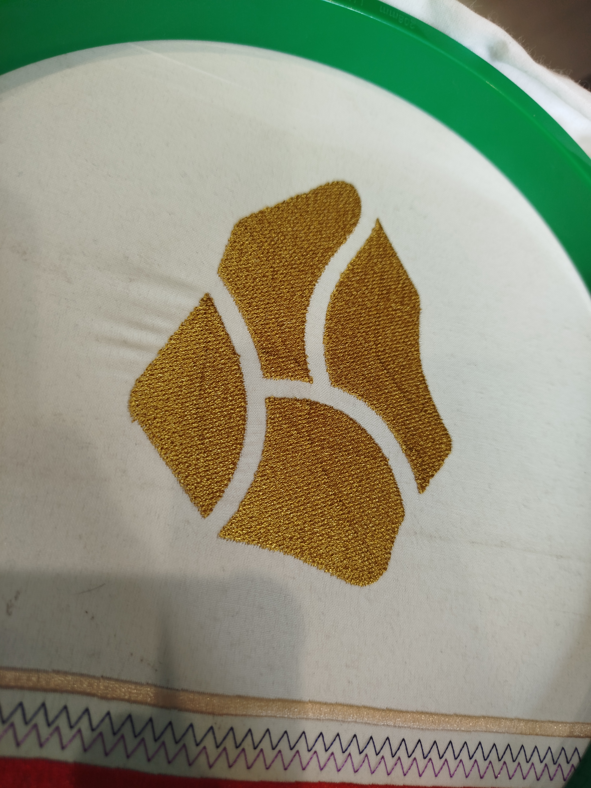

Машинная вышивка от и до с математической точностью
⚡ Машина
| Модель | ZOJE-1202HC |
| Серийный № | ********* |
| Голов | 2 шт |
| Область | 400x500 mm |
| OC | BECS-A15 |
💾 Подготовка накопителя
Внимание!
Перенесите файлы! Смена файловой системы требует удаления всех файлов с USB-накопителя!
- Объём накопителя менее или равен 4Gb
- Файловая система FAT32
- Порт USB
⏳ Расходники
- Иглы - GROZ-BECKERT
- Нитки - EURON
- Фиксатор (флезелин) - ничего
🗻 Ink Scape
CTRL + SHIFT + K - разделить Path
🔪 Ink Stitch
Ink Stitch - расширение для создания макетов машинной вышивки в программе InkSkape
Стабилизатор
Предотвращение деформирования ткани
Неклеевой стабилизатор
Наносится на изнанучную сторону ткани
Клеевой стабилизатор
Наносится на изнанучную сторону ткани, глянцевой стороной к ткани, приживается разогретым утюгом без использования пара
Растворимый стабилизатор
Наноситься на лицевую сторону ткани
Частые ошибки / косяки
Проблема: строчка видна на рельефе вышивки
Решение: сместить строчку к краю вышивки, подчеркнуть рельеф

9 кругов ада (трикотаж)
Пяльца (доступные мне)
- D-180 mm